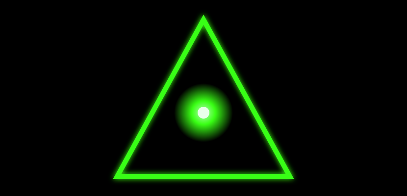

cryptomancer 



A comprehensive cryptographic library for Crystal providing implementations of fundamental cryptographic algorithms following industry standards and RFC specifications.
Overview
cryptomancer is a pure Crystal implementation of essential cryptographic primitives, designed to be fast, secure, and easy to use. The library focuses on providing well-tested, standards-compliant implementations of hash functions, ciphers, and other cryptographic building blocks.
Features
- Standards-compliant: Implements algorithms according to RFC specifications and industry standards
- Pure Crystal: No external dependencies, written entirely in Crystal
- Well-documented: Comprehensive documentation with examples and use cases
- Type-safe: Leverages Crystal's type system for safer cryptographic operations
- Performance-focused: Optimized implementations for production use
- Extensible: Clean architecture for adding new algorithms
What's Included
- Hash Functions: Cryptographic hash algorithms (BLAKE2b, BLAKE2bp, and more coming)
- Ciphers: Symmetric encryption algorithms (planned)
- Digital Signatures: Signature algorithms (planned)
- Key Exchange: Key agreement protocols (planned)
Installation
-
Add the dependency to your
shard.yml:dependencies: cryptomancer: github: qwd666/cryptomancer -
Run
shards install
Usage
require "cryptomancer"Available Classes
Cryptomancer::Hash::Blake2b- Fast and secure cryptographic hash function (RFC 7693)Cryptomancer::Hash::Blake2bp- Parallel version of BLAKE2b for multi-core systems (RFC 7693)
Development
TODO Write development instructions here
Contributing
- Fork it (https://github.com/qwd666/cryptomancer/fork)
- Create your feature branch (
git checkout -b my-new-feature) - Commit your changes (
git commit -am 'Add some feature') - Push to the branch (
git push origin my-new-feature) - Create a new Pull Request
Contributors
- Temirlan Narvsky - creator and maintainer